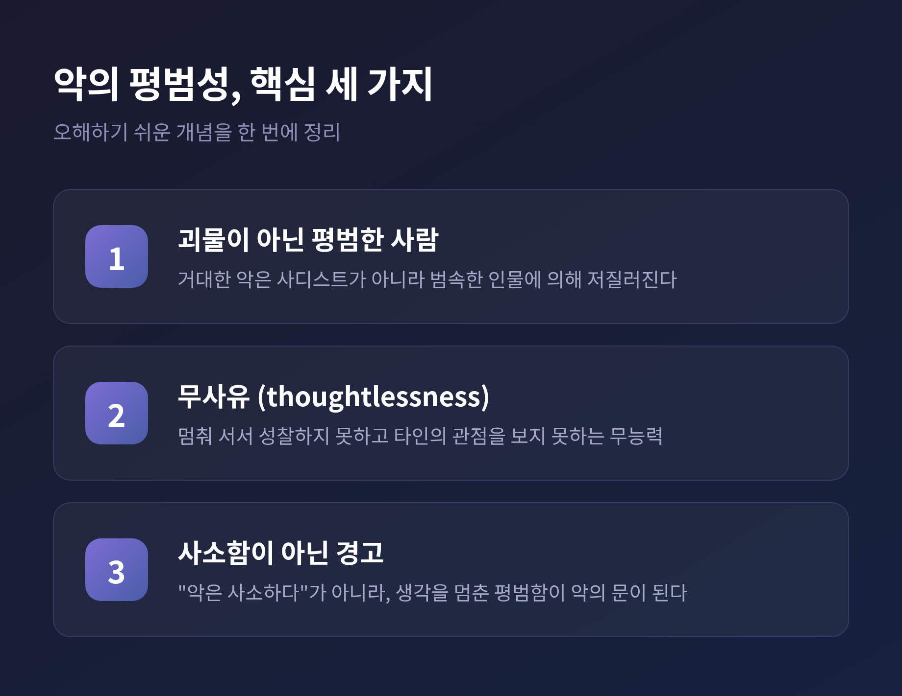
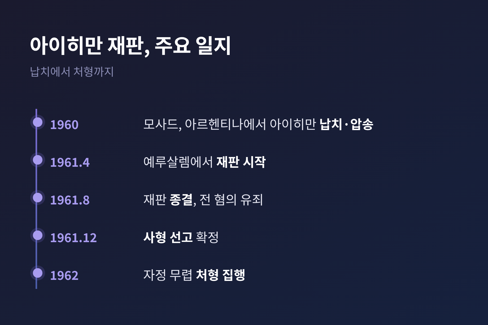

오늘은 한나 아렌트의 '악의 평범성' 개념을 정리해 보려 합니다.
이 말은 흔히 "악은 사소하다"는 뜻으로 오해받습니다. 하지만 아렌트의 본뜻은 정반대에 가깝습니다. 평범한 사람의 '생각하지 않음'이 어떻게 거대한 악의 통로가 되는지를 먼저 짚고, 이 개념을 둘러싼 논쟁까지 함께 살펴보겠습니다.
세 문장으로 요약하면 이렇습니다.
첫째, 악의 평범성이란 끔찍한 범죄가 괴물이 아니라 스스로 사유하지 못하는 평범한 사람에 의해 저질러질 수 있다는 통찰입니다.
둘째, 아렌트는 이것을 나치 전범 아돌프 아이히만의 재판에서 끌어냈습니다.
셋째, 이 개념은 '평범성=악의 사소함'이라는 뜻이 결코 아니며, 오히려 더 무거운 경고입니다.

한나 아렌트(1906~1975)는 독일 태생의 유대계 미국 정치이론가입니다.
마르부르크에서 하이데거에게, 하이델베르크에서 야스퍼스에게 배웠습니다. 1933년 나치가 집권하자 독일을 떠났고, 파리에서 8년간 유대인 난민 구호 단체를 도왔습니다. 1941년 미국으로 건너가 뉴욕 지식인 사회의 일원이 되었습니다.
그녀의 사유는 20세기의 한복판을 통과합니다. 『전체주의의 기원』(1951)으로 나치와 스탈린 체제를 분석했고, 『인간의 조건』(1958)으로 노동·작업·행위라는 근본 범주를 탐구했습니다.
그리고 1963년, 본 주제의 핵심 텍스트인 『예루살렘의 아이히만』이 나옵니다.
아돌프 아이히만은 홀로코스트의 핵심 조직책 중 한 명이었습니다. 나치 친위대(SS) 장교로서 유대인을 죽음의 수용소로 이송하는 행정 업무를 맡았습니다.
전후 그는 아르헨티나로 도주해 숨어 지냈습니다. 1960년 이스라엘 정보기관 모사드에 의해 납치되어 비밀리에 압송되었습니다. 재판은 예루살렘에서 1961년 4월 11일부터 8월 15일까지 이어졌습니다. 법원은 모든 혐의에 유죄를 선고했고, 같은 해 12월 사형을 확정했습니다. 처형은 1962년 5월 31일에서 6월 1일로 넘어가는 자정에 집행되었습니다.
아렌트는 잡지 『뉴요커』의 파견으로 이 재판을 직접 취재했습니다. 독일을 탈출했던 유대인이, 홀로코스트 주역의 재판을 보러 간 셈입니다. 그 연재가 책이 되었고, 책이 나오기 전부터 이미 거센 논쟁이 일었습니다.

아렌트가 법정에서 본 아이히만은 가학적 괴물도, 광신적 이념가도 아니었습니다. 자기 경력에만 관심 있는 범속한 관료에 가까웠습니다.
그녀는 그의 끔찍한 행위를 '무사유(thoughtlessness)'에서 찾았습니다.
"그가 그 시대 최대의 범죄자 중 하나가 되도록 만든 것은 순전한 무사유였으며, 이는 결코 어리석음과 같은 것이 아니다."
여기서 구별이 중요합니다. 무사유는 머리가 나쁜 것이 아닙니다. 아이히만은 멍청한 사람이 아니라 상상력이 결핍된 사람이었습니다. 멈춰 서서 자기 행동의 의미를 성찰하지 못하고, 결코 타인의 관점에서 사물을 바라보지 못하는 무능력. 아렌트는 이것을 '판단의 정지'로 보았습니다.
사유가 멈추면 판단도 마비됩니다. 자기 자신과 나누는 내적 대화가 끊기면, 무엇이 옳고 그른지 스스로 가늠하는 힘도 함께 꺼집니다.
그 유명한 결론은 이렇습니다.
"아이히만의 문제는 그토록 많은 사람들이 그와 같았다는 점, 그리고 그들이 변태도 사디스트도 아닌, 끔찍하고 무섭도록 정상적이었다는 점이다."
이 재판은 아렌트의 마지막 대작 『정신의 삶』으로 이어집니다. 사유·의지·판단이라는 정신 활동을 본격적으로 파고들게 된 계기가 바로 아이히만이었습니다. 그녀는 1975년, 마지막 권 『판단』을 막 시작한 채 세상을 떠났습니다.
아렌트의 글은 거의 10년에 걸친 격렬한 논쟁을 불렀습니다. 한 개념의 의의를 보려면 그 한계도 함께 보아야 합니다.
당장 가장 큰 반발은 유대인 평의회 문제였습니다. 아렌트가 일부 유대인 지도부의 나치 협력 정황을 언급한 점은, 당시 이스라엘 사회에서 매우 민감한 상처를 건드렸습니다.
이후 역사학의 비판은 더 묵직합니다. 역사학자 데이비드 세사라니는 아이히만이 사실은 명령만 따른 관료가 아니라, 자발적으로 유대인을 죽음으로 몰아넣은 광신적 반유대주의자였다고 주장했습니다. 부다페스트에서 유대인 소년을 살해하는 것을 목격한 생존자의 증언, 1937년부터의 보고서 등 1차 사료가 그 근거였습니다.
베티나 슈탕네트의 『예루살렘 이전의 아이히만』은 더 결정적입니다. 아르헨티나 도피 시절 아이히만이 남긴 이른바 '사센 인터뷰'에는, 법정에서의 모습과는 전혀 다른 인물이 담겨 있었습니다. 슈탕네트는 아렌트가 글을 쓸 당시 이 자료를 볼 수 없었음을 지적합니다. 아렌트는 아이히만이 법정에서 연기한 '작은 톱니바퀴'라는 자기 진술을 믿었다는 것입니다.
여기서 신중해야 할 지점이 있습니다. 세사라니·슈탕네트 이후, 아이히만이라는 '실제 인물'을 단순한 무사유의 관료로 본 묘사는 상당히 반박되었습니다. 다만 '평범한 사람도 거대한 악에 가담할 수 있다'는 개념 자체의 가치는 별개로 인정받습니다. 실제 인물에 대한 판단과 개념의 유효성은 구분해서 보는 것이 오늘날의 일반적 정리입니다.
밀그램의 복종 실험도 같은 맥락에 있습니다. 사회심리학자 스탠리 밀그램은 아렌트의 보고서에서 영감을 얻어, 평범한 사람도 권위자의 명령 앞에서 타인에게 해를 가할 수 있는지 실험했습니다. 결과는 종종 아렌트의 테제를 뒷받침하는 근거로 인용됩니다. 그러나 후대 연구자들은 '단순 복종'이 아니라 '대의에의 동일시'였다는 대안 해석을 내놓았습니다. 그 함의는 여전히 논쟁적이라고 보는 편이 정확합니다.
아렌트의 통찰이 오래 살아남은 이유는, 그것이 한 전범의 이야기에 그치지 않기 때문입니다.
현대 관료제는 위계와 비인격적 절차를 통해 개인이 자기 책임을 회피하게 만듭니다. 잔혹한 일에 가담하고도 그저 '행정 업무'였다고 정당화할 여지를 줍니다. 이념보다 순응이 더 무서운 까닭입니다.
디지털 시대에는 결이 조금 달라집니다. 예전의 전체주의가 이념적 공포로 개인의 판단을 대신했다면, 오늘의 기술-관료 시스템은 절차적 합리성과 알고리즘의 권위로 같은 일을 합니다. 개인은 끊임없이 자신의 판단을 당파적 집단이나 자동화된 시스템에 외주하도록 초대받습니다. 아부그라이브 교도소의 학대 같은 사례가 이 통찰이 여전히 유효함을 보여줍니다.
아렌트가 내민 해독제는 단 하나, '사유'입니다. 군중에 동조하거나 알고리즘에 굴복하라는 압력이 거센 지금, 멈춰 서서 스스로 생각하라는 말은 그 어느 때보다 절실합니다.
끝으로 한 마디만 더 드리겠습니다.
악의 평범성은 "악은 사소하다"가 아니라 "생각을 멈춘 평범함이 악의 문이 된다"는 경고였습니다.
내 판단을 누군가에게, 혹은 무언가에 넘겨주고 있지는 않은지. 그 물음을 스스로에게 던지는 일, 아렌트가 우리에게 남긴 숙제는 결국 거기에 있는지도 모르겠습니다.